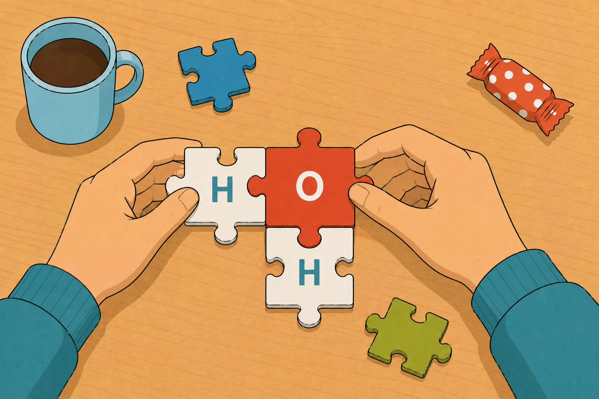
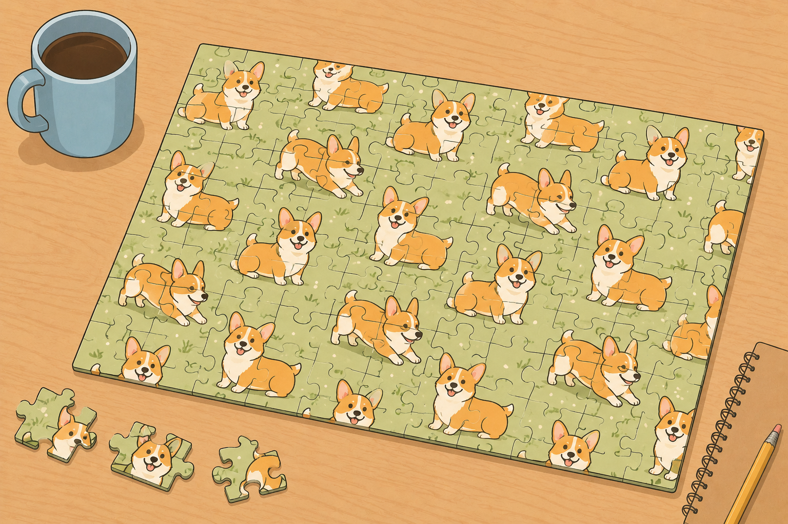
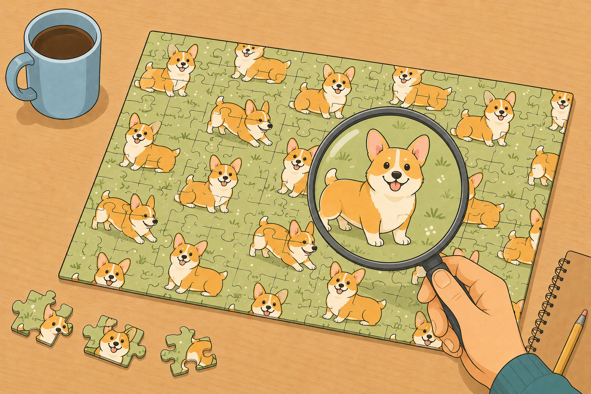
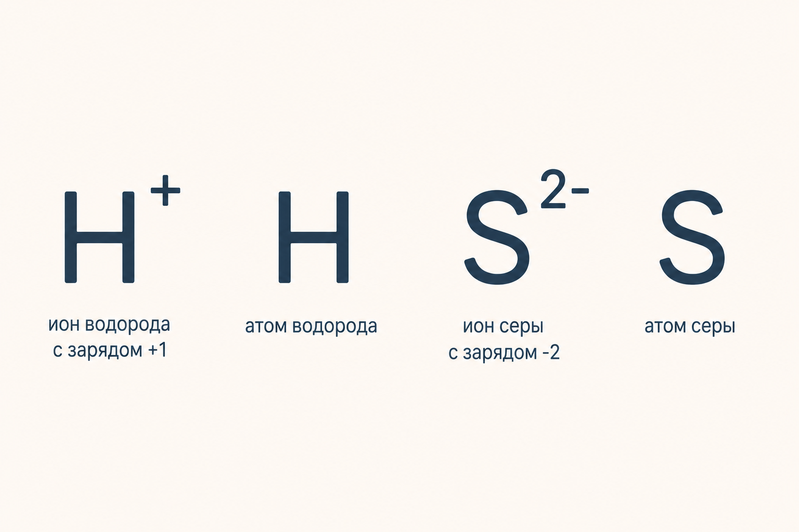
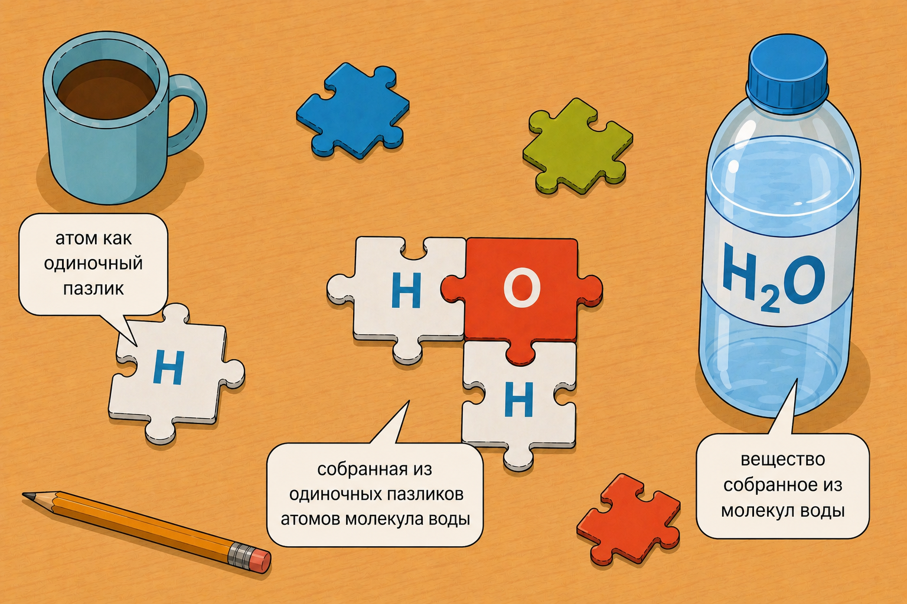
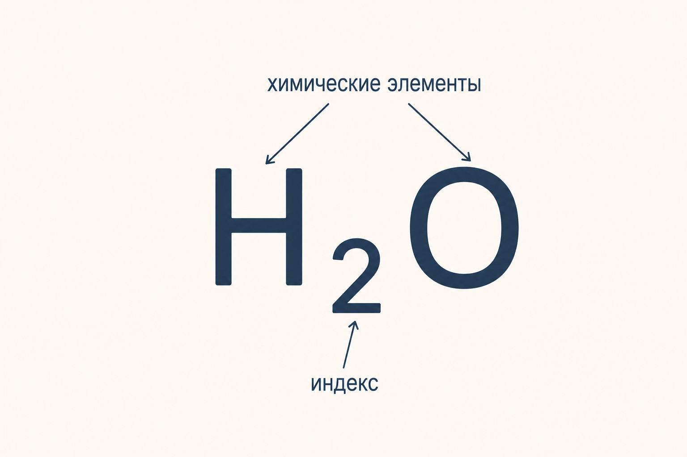
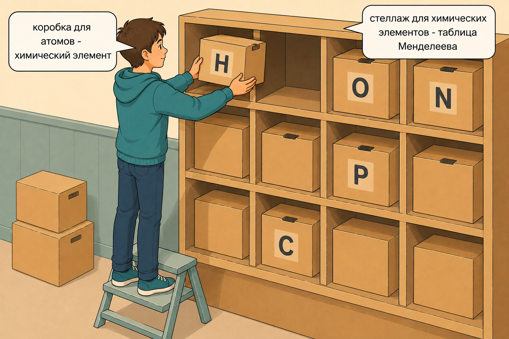
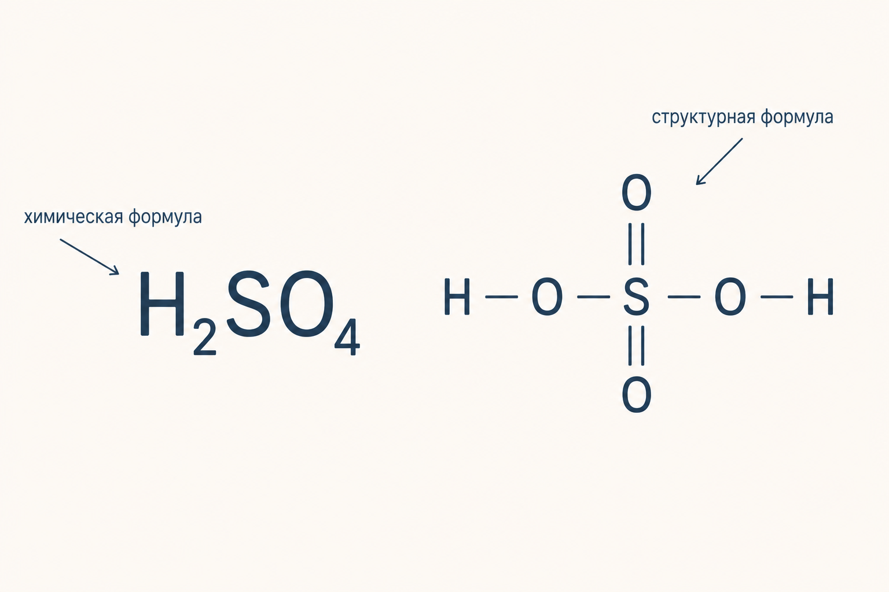

общая химия · тема 2 · всё про вещество
выпуск №02 · 10 минут чтения
окей, химия — это сначала
про вещество
что такое химическое вещество, из чего оно состоит и как отличить атом от молекулы (а заодно — научиться душнить, когда кто-то называет «молекулой» поваренную соль).
давай поиграем в игру?
Так и хочется спросить «я что сюда развлекаться пришёл(шла)?». На самом деле да :) Так вот, знаешь правила Alias? Там всё просто, у нас принцип будет таким же: само слово называть нельзя, поэтому я буду описывать его как можно подробнее, не называя. Готов(а)?
Так, ну она не имеет цвета и запаха, в природе встречается в жидком, твёрдом и даже газообразном виде. О, она замерзает при 0 градусов по Цельсию, а кипит при 100! А ещё она самое распространённое соединение на Земле и жизненно важна для всех живых организмов!
Ну понятно, вода это, давай дальше!
Твёрдая при комнатной температуре, похожа на кристаллики, белого цвета. На вкус солёная! Активно используем её дома, когда готовим. А ещё хорошо растворяется в воде.
Изи, это соль.
Отлично поиграли! А на самом деле мы только что заодно разобрались, что такое химическое вещество. Как? Давай глянем на правила игры с другого угла: я ведь озвучивала тебе лишь физические (а иногда и химические) свойства вещества. Они постоянны для конкретного вещества — поэтому тебе и не составило труда «узнать» это вещество. Получается, у вещества обязательно есть такой «узнаваемый набор» свойств.
Собственно, всем этим мы с тобой и займёмся в этом уроке: разберёмся, что из себя представляет химическое вещество, из чего оно может состоять, обсудим, как вещества классифицируют, и даже научимся отличать вещество от других частиц. Погнали?
так и что такое химическое вещество?
запоминаем
химическое вещество — это устойчивая совокупность частиц, обладающая определённым набором узнаваемых физических и химических свойств.
Например, вода, поваренная соль, глюкоза, уксусная кислота — всем нам знакомые химические вещества, которые мы в большей части случаев без проблем отгадаем по тем самым узнаваемым свойствам.
Да, наверняка, читая определение вещества, у тебя возник вопрос: какая такая устойчивая совокупность частиц? Каких частиц? Не переживай, сейчас разберёмся!
Вещество и правда состоит из частиц, причём это могут быть:
- атомы
- молекулы
- ионы
Но всё не так страшно! Мы ещё не раз поговорим с тобой детально про структуру вещества, но всё по порядку. Если сделать пару шагов назад, можно принять, что всё состоит из атомов (потому что именно они потом превращаются в молекулы и ионы — как, узнаем чуточку позже).
атом
электронейтральная (то есть не имеющая заряда) частица, состоящая из положительно заряженного ядра и отрицательно заряженных электронов.
Атом можно представить как «пазлик», из которого мы потом собираем целостную, понятную нам картинку-мозаику:

При этом сам атом ещё никаких физических и химических свойств за собой не несёт. Разобраться с этим тоже поможет мозаика. Представь: купил(а) ты набор на 1024 пазла, высыпал(а) всё на стол, набрался(лась) сил и терпения превратить это в шедевр — а картинку того, что должно получиться, забыли напечатать на коробке. И только собрав всё по инструкции в единую систему, можно понять, что же у нас вышло.
Готовая, собранная мозаика — наше вещество: смотрим и говорим: «куча маленьких миленьких корги на зелёной полянке». Описали её узнаваемый набор свойств — получается.

Но на самом деле свойства появляются чуть раньше. Допустим, собрали мы только часть — а уже видим: о, корги, красивенький!

Так вот, тот самый милый корги и есть наименьшая порция вещества, состоящая из химически связанных атомов, способная существовать самостоятельно и сохранять химические свойства всего вещества:
молекула
наименьшая порция вещества, состоящая из химически связанных атомов, способная существовать самостоятельно и сохранять химические свойства всего вещества.
Но есть одно но! Не все вещества такую порцию имеют, потому что не все состоят из молекул. Самое время рассказать тебе о том, как вещества можно классифицировать. Различают вещества молекулярного и немолекулярного строения: молекулярного — состоят из молекул, немолекулярного — из ионов или атомов.
И если с молекулами всё понятно, то вещества немолекулярного строения состоят из химически связанных атомов либо заряженных ионов.
ионы
атомы (или группы атомов), которые имеют заряд. Простыми словами — рядом с их записью ты точно увидишь плюс или минус и соответствующую заряду цифру.

О том, как атом превращается в заряженную частицу, мы обязательно поговорим — только чуточку позже, зато теперь можем душнить по полной и исправлять всех, кто называет всё-всё молекулами.
Потому что «молекула воды» — H₂O — действительно верное утверждение: вода имеет молекулярное строение. А вот сказать «молекула поваренной соли» нельзя, потому что поваренная соль — NaCl — имеет немолекулярное строение, и порция таких веществ называется формульной единицей. Теперь тебя точно не проведёшь!
Получается, «эволюцию атома» можно отразить вот так:

Ты уже наверняка заметил(а), что рядом с названиями веществ в тексте стали появляться их формулы.
Стоп, какие формулы?
а что, без формул плохо жилось?
Да, нейронки сейчас, конечно, позволят хоть на китайском в синхронном режиме пообщаться с человеком, не зная языка. Но всё-таки представь, как неудобно:
Да, на китайском слово «вода» чет вообще жесть какая-то…
Зато как просто, если вода во всём мире — H₂O. Общайся не хочу, всегда тебя поймут!
Так людишки и химические формулы изобрели — условные записи состава вещества с помощью символов химических элементов и индексов.

В ней отражают химические элементы и их количество, используя индексы. Да, снова новые словечки, прости. Здесь снова всё не страшно:
химический элемент
это просто совокупность атомов с одинаковым зарядом ядра.
Если атом — это то, что действительно существует в природе, то химический элемент — это «условная коробочка» для всех одинаковых атомов. Зачем? Ну, химики такие товарищи, любят жизнь упрощать! И не зря: водород, например, — самый распространённый элемент во Вселенной: примерно 9 из каждых 10 атомов это он. Все эти одинаковые атомы учёные и сложили в одну коробочку — химический элемент водород, номер 1, первая ячейка таблицы Менделеева.

Ладно, кроме универсального языка для всех химиков мира, химические формулы принесли ещё ряд плюсов: они показывают качественный и количественный состав вещества.
качественный
какой?
какие элементы входят в состав вещества. Например, серная кислота H₂SO₄ содержит водород, серу и кислород.
количественный
сколько?
соотношение элементов по числу атомов. В H₂SO₄ — 2 атома водорода, 1 атом серы, 4 атома кислорода.
Но на самом деле и формулы можно писать по-разному! Та ещё наука:

Дело вот в чём. Просто наличие нужных ингредиентов — скажем, для банановой шарлотки — ещё не гарантирует, что заветный пирог получится: не хватает инструкции, как эти ингредиенты «соединить» между собой.
А поскольку выше мы уже разобрались, что вещество обладает определённым составом и набором свойств, нам важно видеть, что мы «соединили» всё верно. Для этого химики иногда используют структурные формулы — особенно часто ты встретишь их в органической химии: там много веществ одного и того же качественного и количественного состава, и чтобы разобраться, где какое, без структурной формулы не обойтись.
бывают простые, бывают сложные
Теперь, когда глубины мироздания вещества тебе понятны, а общение на универсальном «формульном» языке не пугает, можно поболтать и о том, какими эти вещества бывают.
Выделяют простые и сложные вещества:
простые
состоят из атомов одного химического элемента.
- H₂ водород
- O₂ кислород
- O₃ озон
- Cu медь
- C алмаз
сложные
состоят из атомов разных химических элементов.
- H₂O вода
- H₂SO₄ серная кислота
- NaCl соль
- C₆H₁₂O₆ глюкоза
То есть чтобы правильно определить, каким является вещество, делаем вот что:
- Смотрим на формулу вещества.
- Берём любимую табличку Менделеева (кстати, это главное оружие химика и халявные баллы на любом экзамене — если знать, как ей пользоваться).
- Проверяем, в разных ли клеточках таблицы стоят химические символы из состава вещества.
- И вуаля, готово!
Вот так всё просто! И химия простая (но это не точно). Зато то, что ты справишься, — точно!
есть одна маленькая 🤏🏻 проблемка
В начале я уже писала «атом кислорода», а потом его же называла простым веществом. Запутала тебя? Не переживай, сейчас распутаемся обратно!
O — действительно атом кислорода, а вот O₂ — простое вещество кислород. Как тогда отличать атомы от вещества, если ты сорвал(а) джекпот и они называются одинаково?
Вернёмся к кислороду.
Атом кислорода (O) — тот самый «пазлик» любого вещества, для постройки которого он потом может понадобиться. Никаких свойств — ни химических, ни физических — за ним пока нет, он лишь будущий строительный материал. Его совокупность собрана в таблице Менделеева, в клеточке под номером 8.
Спойлер №1: любые утверждения, которые ведут тебя в таблицу Менделеева, подсказывают, что речь об элементе.
Молекула кислорода (O₂) — это соединение двух атомов кислорода. Привычный нам газ, без запаха и вкуса, тот самый, что необходим для дыхания. У него уже есть и физические свойства, и химические — по которым мы его, к слову, и узнаём, ведь он и есть то самое химическое вещество.
Спойлер №2: если в утверждении есть физические или химические характеристики, нам точно говорят о веществе.
Закрепим всё на примере хлора:
химический элемент
- атомный номер 17
- химический символ Cl
- относительная атомная масса 35,5 а.е.м.
- VIIA группа, 3 период
- …а ещё электронная конфигурация, электроотрицательность, степень окисления, валентность — но со всеми этими страшными словами разберёмся позже.
простое вещество
- формула вещества Cl₂
- агрегатное состояние — газ
- температура кипения −34 °C
- жёлто-зелёная окраска, удушающий запах
- реагирует со многими металлами и неметаллами, образуя хлориды
- …а ещё плотность, молярная масса, растворимость, применение и многое другое.
Кстати, все мои студенты охотно пользовались этим лайфхаком: в химии ооочень полезно включать воображение. Вот дали тебе утверждение: «кислород входит в состав воды». Это про атомы кислорода? Или про вещество кислород?
А ты прямо возьми и представь, как открываешь в жаркий день бутылочку воды — ну не вылетает же оттуда на тебя струёй газ-кислород? Всё верно: в состав воды (H₂O) входят «кирпичики» кислорода, то есть наши атомы.
заключение
Итак, сегодня мы разобрались, что химическое вещество — это не просто набор частиц, а сложная система, где всё имеет значение: и количество частиц, и их расположение, и даже тип связи между ними (об этом — чуточку позже). Мы также узнали, что каждое вещество обладает уникальным набором физических и химических свойств, по которым его можно узнать.
А ещё мы разложили вещество на «пазлики»: разобрались, чем атом отличается от молекулы и иона, научились классифицировать вещества на простые и сложные и познакомились с формулами — универсальным языком, на котором химики всего мира друг друга понимают.
В следующем уроке пойдём дальше: познакомимся со смесями, узнаем, какими они бывают, и даже научимся разделять их на компоненты.
— edspire